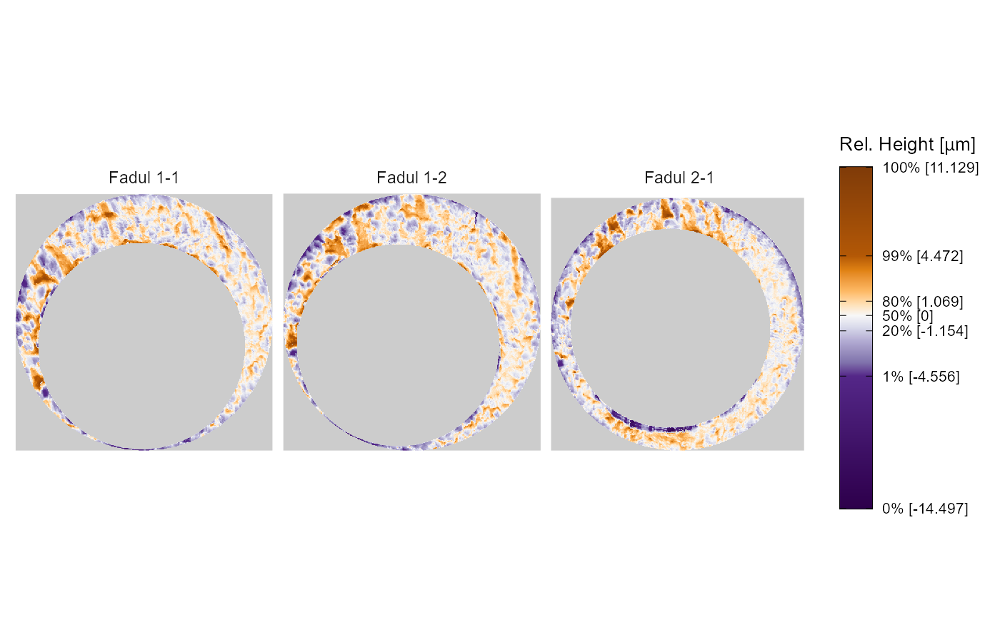

Reproduction of Song et al. (2018) plots using the cmcR package
cmcR_plotReproduction.Rmdlibrary(cmcR) library(magrittr) library(ggplot2) library(purrr) library(dplyr) library(tidyr) library(x3ptools) library(rgl)
Set-up
For the sake of an example we will consider 3 cartridge cases are from Fadul et al. (2011). The data are openly available from the NIST Ballistics Toolmark Research Database. Specifically, we will consider the comparisons between “Fadul 1-1” and “Fadul 1-2” (available here) and “Fadul 2-1” (available here). Note that Fadul 1-1 and Fadul 1-2 are known to have been fired from the same firearm while Fadul 2-1 was fired from a different firearm.
Cartridge case scan image (Figure 1.1)
The rgl package can be used to visualize the cartridge case scans in 3 dimensions. The code below shows how to construct an rgl “scene” including placing lights at desired locations and controlling color, surface reflectance, etc. Each rgl scene can support up to 8 lights, but two are setup in the scene below - one directly above the scan at \((0,0,10)\) and another located “north-by-northwest” of the scan at \((-1,2,2)\). Note that these positions are relative to where the viewer begins - which is somewhere along the \(z\)-axis depending on the value provided to the zoom attribute. Based on experimentation, it appears that applying a Gaussian filter to the surface matrix prior to setting up the scene makes the breech face impressions more visually distinct (otherwise, a good deal of noise due to the scanning process makes it difficult to see much structure). There’s truly an arbitrary amount of tinkering one could perform to get the “best” looking scene for a particular cartridge case scan, so in no way is the scene setup shown below generalizable to more cartridge case scans. Ince the rgl device is opened, the x3ptools::x3p_snapshot function saves the device’s current viewpoint as a .png in a local directly called bfScanImages. The same procedure is carried out for the fadul1.2_raw object (not shown).
To learn more about how various aspects of a scene are constructed, see this vignette for the rgl package. For more details on using rgl specifically applied to .x3p files, see the documentation for the x3ptools package on Github.
fadul1.1_id <- "DownloadMeasurement/2d9cc51f-6f66-40a0-973a-a9292dbee36d" # Same source comparison fadul1.2_id <- "DownloadMeasurement/cb296c98-39f5-46eb-abff-320a2f5568e8" # Code to download breech face impressions: nbtrd_url <- "https://tsapps.nist.gov/NRBTD/Studies/CartridgeMeasurement" fadul1.1_raw <- x3p_read(file.path(nbtrd_url,fadul1.1_id)) fadul1.2_raw <- x3p_read(file.path(nbtrd_url,fadul1.2_id))
#apply lowpass filter to reduce noise in scan: surface1 <- fadul1.1_raw %>% cmcR::preProcess_gaussFilter(wavelength = 16,filtertype = "lp") surface2 <- fadul1.2_raw %>% cmcR::preProcess_gaussFilter(wavelength = 16,filtertype = "lp") params <- rgl::r3dDefaults zoom = .7 size = c(300,300) params$windowRect <- c(40, 125, 40 + size[1], 125 + size[2]) params$userMatrix <- diag(c(1, 1, 1, 1)) params$zoom <- zoom #opens blank "canvas" upon which we can add lights, surfaces, etc. open3d(params = params) #> wgl #> 1 #removes any previously declared lights in scene rgl.pop("lights") #set-up two lights for scene -- a lot of experimentation possible here light3d(x = -1,y = 1,z = 2,viewpoint.rel = TRUE,ambient = "white",diffuse = "white",specular = "white") light3d(x = 0,y = 0,z = 10,ambient = "grey60",diffuse = "grey50",specular = "grey60",viewpoint.rel = TRUE) #setup surface visualization multiply <- 1 #x3ptools::image_x3p default to exaggerate relief z <- multiply * surface1$surface.matrix # Exaggerate the relief yidx <- ncol(z):1 y <- fadul1.1_raw$header.info$incrementY * yidx x <- fadul1.1_raw$header.info$incrementX * (1:nrow(z)) # emission, specular, ambient affect how the surface interacts with lights -- # again, a lot of possible experimentation surface3d(x, y, z, back = "filled",emission = "grey30",specular = "grey50",ambient = "grey10") x3ptools::x3p_snapshot(file = "bfScanImages/fadul1-1.png") rgl.close()
magick::image_append(c(magick::image_read("bfScanImages/fadul1-1.png"), magick::image_read("bfScanImages/fadul1-2.png"))) %>% plot()

Processed Cartrige Case Scan (Figure 5)
Plotting the cartridge case surface matrix in which height values are mapped to a divergent color scheme may help highlight breech face impressions. We can use ggplot2 to accomplish this.
data("fadul1.1_processed","fadul1.2_processed")
#Download a non-matching cartridge case to Fadul 1-1 and Fadul 1-2 fadul2.1_raw <- x3ptools::read_x3p("https://tsapps.nist.gov/NRBTD/Studies/CartridgeMeasurement/DownloadMeasurement/8ae0b86d-210a-41fd-ad75-8212f9522f96") fadul2.1_processed <- fadul2.1_raw %>% preProcess_crop(region = "exterior", radiusOffset = -30) %>% preProcess_crop(region = "interior", radiusOffset = 200) %>% preProcess_removeTrend(statistic = "quantile", tau = .5, method = "fn") %>% preProcess_gaussFilter() %>% x3ptools::sample_x3p()
cmcR::x3pListPlot(x3pList = list("Fadul 1-1" = fadul1.1_processed, "Fadul 1-2" = fadul1.2_processed, "Fadul 2-1" = fadul2.1_processed), type = "faceted", rotate = 90, legend.quantiles = c(0,.01,.2,.5,.8,.99,1))

CMC Plot (Figure 4)
The code below will perform the cell-based comparison procedure and then determine the initial/high CMCs for the known match and known non-match pairs of cartridge cases. The “initial” CMCs are determined based on the originally proposed method from Song (2013) while the “high” CMCs are determined using the “High CMC” method proposed by Tong et al. (2015).
kmComparisonFeatures <- purrr::map_dfr(seq(-30,30,by = 3), ~ comparison_allTogether(reference = fadul1.1_processed, target = fadul1.2_processed, theta = .)) kmComparisonFeatures_rev <- purrr::map_dfr(seq(-30,30,by = 3), ~ comparison_allTogether(reference = fadul1.2_processed, target = fadul1.1_processed, theta = .)) kmComparison_allCMCs <- kmComparisonFeatures %>% mutate(originalMethodClassif = decision_CMC(cellIndex = cellIndex, x = x, y = y, theta = theta, corr = pairwiseCompCor, xThresh = 20, thetaThresh = 6, corrThresh = .5), highCMCClassif = decision_CMC(cellIndex = cellIndex, x = x, y = y, theta = theta, corr = pairwiseCompCor, xThresh = 20, thetaThresh = 6, corrThresh = .5, tau = 1)) kmComparison_allCMCs_rev <- kmComparisonFeatures_rev %>% mutate(originalMethodClassif = decision_CMC(cellIndex = cellIndex, x = x, y = y, theta = theta, corr = pairwiseCompCor, xThresh = 20, thetaThresh = 6, corrThresh = .5), highCMCClassif = decision_CMC(cellIndex = cellIndex, x = x, y = y, theta = theta, corr = pairwiseCompCor, xThresh = 20, thetaThresh = 6, corrThresh = .5, tau = 1)) knmComparisonFeatures <- purrr::map_dfr(seq(-30,30,by = 3), ~ comparison_allTogether(reference = fadul1.1_processed, target = fadul2.1_processed, theta = .)) knmComparisonFeatures_rev <- purrr::map_dfr(seq(-30,30,by = 3), ~ comparison_allTogether(reference = fadul2.1_processed, target = fadul1.1_processed, theta = .)) knmComparison_allCMCs <- knmComparisonFeatures %>% mutate(originalMethodClassif = decision_CMC(cellIndex = cellIndex, x = x, y = y, theta = theta, corr = pairwiseCompCor, xThresh = 20, thetaThresh = 6, corrThresh = .5), highCMCClassif = decision_CMC(cellIndex = cellIndex, x = x, y = y, theta = theta, corr = pairwiseCompCor, xThresh = 20, thetaThresh = 6, corrThresh = .5, tau = 1)) knmComparison_allCMCs_rev <- knmComparisonFeatures_rev %>% mutate(originalMethodClassif = decision_CMC(cellIndex = cellIndex, x = x, y = y, theta = theta, corr = pairwiseCompCor, xThresh = 20, thetaThresh = 6, corrThresh = .5), highCMCClassif = decision_CMC(cellIndex = cellIndex, x = x, y = y, theta = theta, corr = pairwiseCompCor, xThresh = 20, thetaThresh = 6, corrThresh = .5, tau = 1))
We can then visualize the CMCs for these comparisons. Below are the CMCs determined under the original method of Song (2013).
kmCMCPlot <- cmcR::cmcPlot(referenceScan = fadul1.1_processed, targetScan = fadul1.2_processed, reference_v_target_CMCs = kmComparison_allCMCs, target_v_reference_CMCs = kmComparison_allCMCs_rev, type = "faceted", x3pNames = c("Fadul 1-1","Fadul 2-1"), legend.quantiles = c(0,.01,.2,.5,.8,.99,1), cell.colors = c("#a60b00","#1b03a3"), cell.alpha = .15, na.value = "gray80") %>% map(~ . + theme(strip.text = element_blank())) kmLegend_originalCMC <- cowplot::get_legend(kmCMCPlot$originalMethodCMCs_reference_v_target + theme(legend.direction = "horizontal")) km_originalCMC_reference_v_target <- kmCMCPlot$originalMethodCMCs_reference_v_target + theme(legend.position = "none", plot.margin=unit(c(-.05,-.5,-.05,-.5), "cm"), plot.title = element_blank()) km_originalCMC_target_v_reference <- kmCMCPlot$originalMethodCMCs_target_v_reference + theme(legend.position = "none", plot.margin=unit(c(-.05,-.5,-.05,-.5), "cm"), plot.title = element_blank()) km_originalCMCPlot_bothDirections <- ggplot(data.frame(a = 1)) + theme_void() + coord_cartesian(xlim = c(1,10), ylim = c(1,11), expand = FALSE) + annotation_custom(ggplotGrob(km_originalCMC_reference_v_target), xmin = 1,xmax = 10,ymin = 6.2,ymax = 11) + annotation_custom(ggplotGrob(km_originalCMC_target_v_reference), xmin = 1,xmax = 10,ymin = 2,ymax = 6.2) + annotation_custom(kmLegend_originalCMC, xmin = 1,xmax = 10,ymin = 1.45,ymax = 1.45) + annotate("text",x = 3.85,y = 8.15,size = 5,label = "Fadul 1-1") + annotate("text",x = 3.85,y = 4,size = 5,label = "Fadul 1-1") + annotate("text",x = 7.05,y = 8.15,size = 5,label = "Fadul 1-2") + annotate("text",x = 7.05,y = 4,size = 5,label = "Fadul 1-2") km_originalCMCPlot_bothDirections

And the CMCs determined under the High CMC method of Tong et al. (2015).
kmLegend_highCMC <- cowplot::get_legend(kmCMCPlot$highCMC_reference_v_target + theme(legend.direction = "horizontal")) km_highCMC_reference_v_target <- kmCMCPlot$highCMC_reference_v_target + theme(legend.position = "none", plot.margin=unit(c(-.05,-.5,-.05,-.5), "cm"), plot.title = element_blank()) km_highCMC_target_v_reference <- kmCMCPlot$highCMC_target_v_reference + theme(legend.position = "none", plot.margin=unit(c(-.05,-.5,-.05,-.5), "cm"), plot.title = element_blank()) km_highCMCCMCPlot_bothDirections <- ggplot(data.frame(a = 1)) + theme_void() + coord_cartesian(xlim = c(1,10), ylim = c(1,11), expand = FALSE) + annotation_custom(ggplotGrob(km_highCMC_reference_v_target), xmin = 1.1,xmax = 10,ymin = 6.55,ymax = 11) + annotation_custom(ggplotGrob(km_highCMC_target_v_reference), xmin = 1,xmax = 10,ymin = 2,ymax = 6.55) + annotation_custom(kmLegend_highCMC, xmin = 1,xmax = 10,ymin = 1.45,ymax = 1.45) + annotate("text",x = 3.65,y = 8.65,size = 5,label = "Fadul 1-1") + annotate("text",x = 3.65,y = 4,size = 5,label = "Fadul 1-1") + annotate("text",x = 7.25,y = 8.65,size = 5,label = "Fadul 1-2") + annotate("text",x = 7.25,y = 4,size = 5,label = "Fadul 1-2") km_highCMCCMCPlot_bothDirections

The known non-match pair didn’t yield any high CMCs, so we can only visualize the CMCs identified under the original method of Song (2013).
knmCMCPlot <- cmcR::cmcPlot(referenceScan = fadul1.1_processed, targetScan = fadul2.1_processed, reference_v_target_CMCs = knmComparison_allCMCs, target_v_reference_CMCs = knmComparison_allCMCs_rev, type = "faceted", x3pNames = c("Fadul 1-1","Fadul 2-1"), legend.quantiles = c(0,.01,.2,.5,.8,.99,1), cell.colors = c("#a60b00","#1b03a3"), cell.alpha = .15, na.value = "gray80") %>% map(~ . + theme(strip.text = element_blank())) knmLegend <- cowplot::get_legend(knmCMCPlot$originalMethodCMCs_reference_v_target + theme(legend.direction = "horizontal")) knm_reference_v_target <- knmCMCPlot$originalMethodCMCs_reference_v_target + theme(legend.position = "none", plot.margin=unit(c(-.05,-.5,-.05,-.5), "cm"), plot.title = element_blank()) knm_target_v_reference <- knmCMCPlot$originalMethodCMCs_target_v_reference + theme(legend.position = "none", plot.margin=unit(c(-.05,-.5,-.05,-.5), "cm"), plot.title = element_blank()) knm_cmcPlot_bothDirections <- ggplot(data.frame(a = 1)) + theme_void() + coord_cartesian(xlim = c(1,10), ylim = c(1,11), expand = FALSE) + annotation_custom(ggplotGrob(knm_reference_v_target), xmin = 1,xmax = 10,ymin = 6.5,ymax = 11) + annotation_custom(ggplotGrob(knm_target_v_reference), xmin = 1,xmax = 10,ymin = 2,ymax = 6.5) + annotation_custom(knmLegend, xmin = 1,xmax = 10,ymin = 1.45,ymax = 1.45) + annotate("text",x = 3.75,y = 8.65,size = 5,label = "Fadul 1-1") + annotate("text",x = 3.75,y = 4,size = 5,label = "Fadul 1-1") + annotate("text",x = 7.45,y = 8.65,size = 5,label = "Fadul 2-1") + annotate("text",x = 7.45,y = 4,size = 5,label = "Fadul 2-1") knm_cmcPlot_bothDirections
References
Song, J. (2013). Proposed “NIST Ballistics Identification System (NBIS)” Based on 3D Topogra-phy Measurements on Correlation Cells.American Firearm and Tool Mark Examiners Journal,45(2):11.
Tong, M., Song, J., and Chu, W. (2015). An Improved Algorithm of Congruent Matching Cells(CMC) Method for Firearm Evidence Identifications.Journal of Research of the National Institute of Standards and Technology, 120:102.
Fadul T., Hernandez G., Stoiloff S. and Gulati Sneh “An Empirical Study to Improve the Scientific Foundation of Forensic Firearm and Tool Mark Identification Utilizing 10 Consecutively Manufactured Slides,” 2011 NCJRS 237960